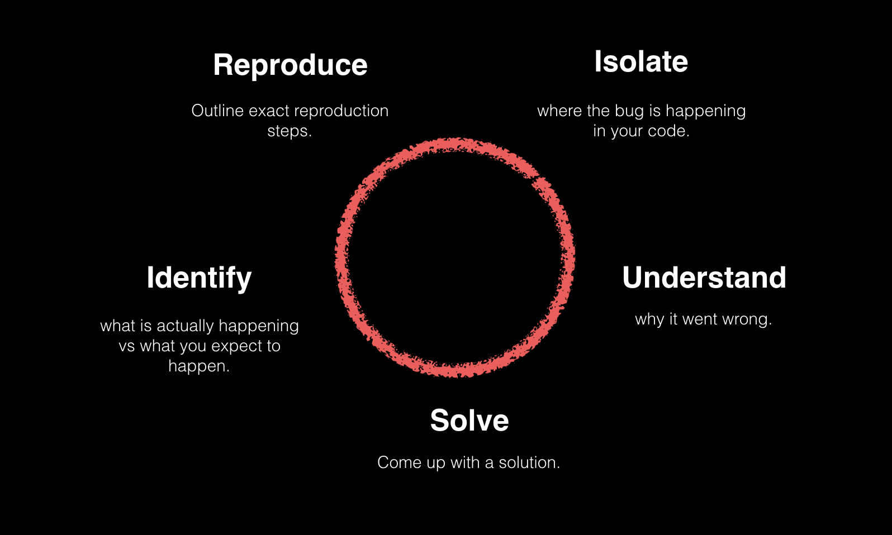

Ruby Debugging
Brian Douglas
Links
github/bdougie

Overview
- debugging life cycle
- debugging tools
- debugging approach
Expectation
- You should have a basic understanding of Ruby
- Please particpate by answering my questions 😺
The Struggle is Real
You should be open to struggling for at least 30-40mins on a problem
Debugging Cycle
Debugging Cycle
Debugging Tools
- irb
- printing something to the terminal
- setting breakpoints
- error handling
irb in Ruby
$ irb >
Book = Struct.new(:title)
def find_book(title)
books = []
books << Book.new('Eloquent Ruby')
books.find { |b| b.title == title }
end
book = find_book('Eloquent Ruby')
p book # This will print our book object
book = find_book('POODR')
p book # This will print nil
book.name # Guess what happens next :)
Error Message
- Read the message, note the line number
- Opportunity for Googling
example.rb:8:in `block in powers_of_two':
undefined local variable or method `new_arr'
for main:Object (NameError)
Stack Trace
follow the breadcrumbs to what happened
/tmp/stack.rb:6:in 'method2': undefined local variable or method 'invalid_variable' for main:Object (NameError)
from /tmp/stack.rb:2:in 'method1'
from /tmp/stack.rb:9:in ''
Let's squash bugs
def powers_of_two(n)
new_arr = []
(0..n).to_a.each_with_index do |x, i|
new_arr(2*i)
end
new_arr
end
# powers_of_two(2)
# [1,2,4]
What is the difference between puts and print?
Set a breakpoint w/pry
Install via:
$ gem install pry
$ gem install pry-nav
$ pry
Then add:
require 'pry'
into your program.
Setting a breakpoint
def powers_of_two(n)
new_arr = []
(0..n).to_a.each_with_index do |x, i|
binding.pry # breakpoint set
new_arr(2*i)
end
new_arr
end
Setting up exceptions
def do_some_math(n)
1/n
rescue
"something went wrong"
end